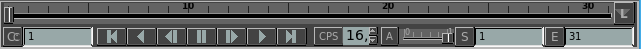
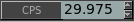
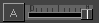

La Línea de Tiempo

La linea de tiempo te permite controlar que cuadro en una secuencia o película es mostrada.
Puede ser mostrada o no usando la tecla de control F3.
La línea de tiempo te permite facilmente saltar de un punto a otro de la secuencia de video que es mostrada. Cuando en modo LDE, la linea de tiempo también mostrará cada pelicula o secuencia como un segmento de video. El segmento de video actual será destacado.
El cache para la secuencia o la pelicula es mostrado como una línea verde debajo de la linea de tiempo.
Display Codigo de Tiempo (Timecode)
/ Frame
El botón
se refiere al cuadro actual siendo mostrado. Cliqueando en él, te permitira mostrar la línea de tiempo y la información de los cuadros como cuadros, segundos, tiempo o codigo de tiempo.
Controles de Reproducción
Los controles de reproducción funcionan muy similarmente a los de un VCR o Stereo. Te permiten, de izquierda a derecha: ir al comienzo de la película,
reproducir la película en reversa, retroceder un solo
cuadro, pausar la reproducción, avanzar un solo cuadro, reproducir la pelicula hacia adelante e ir al final de la pelicula.
Contrariamente a tu VCR, no hay controles de rapido avance o rapido rebobinado.
Esa functionalidad puede ser obtenida cambiando la velocidad de reproducción (CPS) y luego reproducir la pelicula.
Si usted reproduce una secuencia de imágenes, la reproducción no será contínua al principio.
mrViewer intentará primero almacenar todas las imágenes en memoria antes de reproducirlas. Las imágenes almacenadas se muestran con una línea verde abajo de los cuadros de la secuencia. Si usted se queda sin memoria o comienza a volcar la memoria al disco (swapping), podría ser que usted no pueda reproducir la secuencia en forma contínua.
Playback en reversa en forma contínua de archivos de películas es largamente dependiente del codec usado en el archivo. Peliculas sin audio o con el audio apagado suelen reproducirse mejor.
Velocidad de Reproducción (CPS)

El control de CPS (Cuadros por Segundo) te permite ajustar la velocidad de reproducción. Esto permite reproducir la secuencia en cámara lenta o a varias veces su velocidad normal.
Control de
Audio (Volumen)

El control de audio puede ser usado para cambiar entre varias pistas de audio, cliqueando en el botón A .
Además, el volumen del audio puede ser controlado con el control junto a él. Nótese que, dependiendo de su platforma, cambiar
el
volumen puede afectar todas las otras aplicaciones que usan el sonido. En Linux, usted puede tener mas control usando una utilidad de mixer como kmix o pavucontrol.
Límites de la Linea De Tiempo
Finalmente, los botones S
y E
te permiten cambiar el comienzo o el fin de la línea de tiempo. Esto
no tiene efecto en cambiar la longitud verdadera de la película o secuencia y es solo provisto para reproducción en loops.